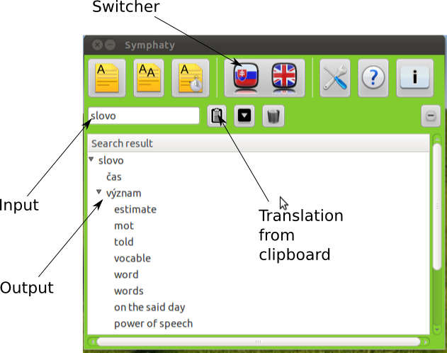

Basics
This section contains basics for manipulating Symphaty:
Translation from input field
On the image we can see description of graphical interface. To translate word
we write word to part marked on the image as Input. Then we push Enter button
on keyboard. Translation will be outputed.

Translation from clipboard
This type of translation we perform by marking text we want to translate then
pushing in same time Ctrl+C buttons. Then we click on dictionary window and
push Translaton from clipboard button or Alt+T key combination.
Orientation in output, switching translation direction
Translation will be shown in Output. We will see that for each word there are three parts
meaning - contains meaning of word, phrase - contains phrase (contains phrases just in english
- slovak translation direction), tense - contains tenses (just in english - slovak translation
direction). Switching of translation direction can be achieved by pushin Switcher button.